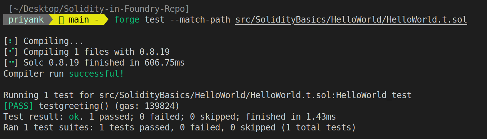

Solidity is the most popular smart contract development language at the time of writing.
I felt there was still a gap to be filled with regards to a comprehensive Solidity book, that starts from scratch and introduces beginners to the latest tech from the very beginning.
This mdbook will start from a barebones hello world contract, and will increase in complexity, as is the case with other books that teach a programming language.
Foundry is a powerful framework that allows us to build, test and deploy smart contracts to the blockchain straight out of the command line. This book will be using Foundry's tooling to write and test our smart contracts.
Most, if not all chapters in this book will contain at least two sections:
- A section explaining the actual smart contract, and the required concepts.
- Another one dedicated to writing a corresponding test, no matter how simple, using Foundry's toolkit.
There are two main ways of deriving value from this book:
- For beginners who just want to learn Solidity but don't want to pick up Foundry for now, you can just read the first section of each chapter, and try to replicate it in the Remix IDE. In case you find the Remix IDE intimidating, you can go through this lesson from Patrick Collins' 32-hour course.
- For folks interested in getting started with Foundry, I recommend you follow all sections of each chapter.
Here are some resources that this book is inspired by:
TL;DR: This project is an inspired twist on other sources of learning Solidity. I will be starting from scratch assuming no experience with Solidity. I do however expect a basic understanding of how blockchains work.
⚠️ Full disclosure
I am not in any way associated with the core Foundry team, and don't wanna be seen as piggybacking off of them. This mdbook is a personal labour of love, with the final goal being for this to one day serve as a free, comprehensive and open-sourced resource for wanabee Solidity devs.
Getting Started
To follow along, I highly recommend that you install Foundry on your system. The exact installation instructions might vary depending on your system, but the Foundry book is quite comprehensive.
Also, feel free to use Remix for an interactive UI to interact with your smart contracts, although I'll be using Foundry throughout. This will still be a useful resource for you if you decide to stick with Remix, which is more beginner friendly.
Once you have all the CLI tools part of Foundry installed in your system, you can get started by creating a new directory and running:
$ forge init
📝 Note: Foundry is a modular toolchain that consists currently of 4 different CLI tools. We will primarily be using Forge throughout, but you can read more about each of these tools in the Foundry book.
You will notice a bunch of new files and directories. Here are the ones you primarily need to worry about for now:
-
lib: This directory is where all your dependencies are stored. You will find yourself relying on Solidity code written by others much too often. This directory is where all of that will be stored.
-
src: The src directory is where you typically store all your smart contract code.
-
test: The test directory is where you typically store all your test files.
-
script: This is where you typically write scripts that deploy new smart contracts to the blockchain, and interact with existing ones.
-
foundry.toml: We can use the toml file to customise virtually all aspects of Foundry's behaviour.
For now, to keep things simple, we will only be working with the src directory. All our code and tests will go inside this directory.
To test if your Foundry project was properly initialized, run:
$ forge build
This command compiles all the Solidity files within the parent directory, not just the src directory. For now, Forge will simply compile the Solidity code that ships along with the default initialization of a Foundry project.
Hello World
Before getting started with our first contract, let us set up the diectory structure I will be following throughout the book. As I said before, we will be storing all our code within the src directory.
- Create a directory called
SolidityBasicsinsidesrc. This directory will contain all the chapters that deal with basic Solidity Syntax. - Create another directory called
HelloWorldinsideSolidityBasics. This directory will contain all the code related to the Hello World contract. Each chapter will have its own directory. - Create a file called
HelloWorld.solinsideHelloWorld.
Your directory structure should look something like this:
├── src/
│ ├── SolidityBasics/
│ │ ├── HelloWorld/
| | │ ├── HelloWorld.sol
│ │ │ └── HelloWorld.t.sol
You are now ready to write your first smart contract in Solidity, and learn about what all goes inside a bare-bones smart contract.
HelloWorld.sol
The first line of almost all smart contracts starts something like this:
// SPDX-License-Identifier: MIT
-
The SPDX license does not have anything to do with the code itself. The Solidity Compiler (solc) encourages the use of a license at the top of every Solidity file to clearly define the copyright legalities of the code.
-
I will be using the MIT license throughout the book, one of the most permissive licenses out there. Any code written in this book is freely available to anyone and everyone for any use. A full list of all SPDX licenses can be found on their website.
Paste this below the License identifier:
pragma solidity ^0.8.19;
- Every Solidity codebase must specify the versions of the Solidity Compiler(solc) it is compatible with.
- Long story short, code written for older versions of the solc might not be compatible with the newer ones.
- It is important therefore, to make sure that the code you are writing is compiled with the correct version of the solc.
There are 3 main ways to specify the solc version:
-
pragma solidity ^0.8.0;This will ensure that your contract is compiled with a solc version equal to or greater than 0.8.0, but less than 0.9.0. The idea here is to that your contract won't be compiled with a solc version that will break your code. The solc will introduce breaking changes only with major versions. These versions have the form 0.x.0 or x.0.0. -
pragma solidity >=0.8.0 <0.8.14;This is a way to specify the exact range of the solc you want to use in your contract. -
pragma solidity 0.8.0This way you can make sure your contract only compiles with a specific compiler version.
Now we are ready to initialize a new smart contract using the contract keyword:
contract HelloWorld { }
All the code you write goes within these curly brackets.
📝 Note: A single Solidity file may contain multiple smart contracts within it. Pragma defines the Solidity version for the entire file, not a single contract.
Our contract consists of a single string that returns the string "Hello world". Paste this within the curly brackets:
string public greeting = "Hello World";
And that's it. You created a Hello World smart contract. Your code should look something like this:
// SPDX-License-Identifier: MIT
pragma solidity ^0.8.19;
contract HelloWorld {
string public greeting = "Hello World";
}
If you are working with Remix, you can compile your contract by clicking Ctrl + S.
If you are working with Foundry, make sure you have a terminal open in the parent directory, the same directory where you initalized the project. Then run the following command:
forge build
This command will compile all the Solidity files that exist within the parent directory.
If you've reached this far, and want to write a corresponding test for this contract, create a new file named HelloWorld.t.sol on the same level as this file.
HelloWorld.t.sol
Foundry allows us to write tests using Solidity, allowing Solidity developers the comfort of not having to use a language they are not comfortable with.
Each 'test' is a single function within a smart contract. These typically have a condition that has to be satisfied. If the condition is true, the test passes; otherwise it fails.
Since HelloWorld.t.sol is basically another Solidity file from Forge's perspective, it will begin like other Solidity files do:
// SPDX-License-Identifier: MIT
pragma solidity ^0.8.19;
Next, we import two smart contracts into this file:
import "forge-std/Test.sol";
import "./HelloWorld.sol";
- The first import is the Forge test library, which contains the
Testcontract. Foundry lets us use its' testing suite by exposing functions from within the test contract to us. - The second import is the smart contract we are testing.
📝 Note: Please note that Solidity as a language supports inheritance, but not all smart contract languages do so. Do not worry too much about how inheritance works, we will look into it in more detail later on.
Next, we initialize the HelloWorld_test contract like this:
contract HelloWorld_test is Test {
}
This is the contract that will contain all of our tests. We inherit from the Test contract, which allows us to use the testing suite.
Next, we initialize a test function within the contract like this:
function testgreeting() public {
}
Within the function, create a new instance of the HelloWorld contract like this:
HelloWorld helloWorld = new HelloWorld();
We can now use the helloWorld variable to access the functions within the HelloWorld contract.
Lastly we use assertEq to assert equality between two values. If the values are equal, the test passes; otherwise it fails.
This is what the test function should look like:
function testgreeting() public {
HelloWorld helloWorld = new HelloWorld();
assertEq(helloWorld.greeting(), "Hello World");
}
Now understand this carefully. We use Forge to compile and test our smart contracts. Forge compiles all smart contracts in a codebase indiscriminately. This means that it will compile all smart contracts, including the test contracts.
Forge distingueshes the indiviual test functions by looking at function names. Any function beginning with the string "test" is executed as a test function. This means that "testgreeting" is a valid name for a test function, but "greetingtest" is not.
Make sure to save your files and compile them using the build command. We can now execute the test function by running the following command:
forge test --match-path src/SolidityBasics/HelloWorld/HelloWorld.t.sol
We can use the match path flag to specify which test file we want to run. This is useful when we have multiple test files in our codebase, and don't want to run all of them.
This is what your terminal should look like right now:
And that's it!
This is all there is to writing a basic Solidity test in Foundry.
Now there's a variety of different ways to write more complex and comprehensive tests, but we will look into those later on, when we deal with more complex smart contracts.
Types in Solidity
Solidity is a statically typed language, which means that the type of every variable needs to be defined at compile time. Solidity has many different types for us to use. They can be broadly classified into two categories:
1. Value Types
Variables of value types store their data in a piece of memory they own. These variables are passed by value when assigned to new variables or passed as function arguments. Changing the value of the second variable won't alter the value of the original. Solidity consists of the following value types:
- Booleans (
bool) - Unsigned integers (
uint) - Signed integers (
int) - Addresses (
address) - Enums (
enum) - Bytes (
bytes)
2. Reference Types
Variables of reference types store a reference to the data in a piece of memory they don't own. That piece of memory could be used by other reference type variables as well. These variables are passed by reference when assigned to new variables or passed as function arguments. A change in the value of the second variable can alter the value of the original. Solidity consists of the following reference types:
- Arrays (
[]) - Structs (
struct) - Mappings (
mapping)
Consider this bit of Solidity code:
// SPDX-License-Identifier: MIT
pragma solidity ^0.8.19;
contract ValueType_vs_ReferenceType {
//Value Type
uint public valueVar1 = 10;
// Reference Type: array of unsigned integers
uint[] public referenceVar1 = [1, 2, 3];
function modifyValueType(uint newValue) public view {
// New Variable assigned the value of valueVar1
uint valueVar2 = valueVar1;
//New variable passed
valueVar2 = newValue;
}
function modifyReferenceType(uint index, uint newValue) public {
// New variable, referenceVar2, refers to the same storage location as referenceVar1
uint[] storage referenceVar2 = referenceVar1;
// Modifying the localReference will modify referenceVar
referenceVar2[index] = newValue;
}
}
This contract consists of two state variables, and two public functions:
-
modifyValueType()creates a new value type in memory, and assigns it an initial value from the original value type, before finally assigning it the value passed as the function argument. This won't change the value ofvalueVar1, since only a temporary copy of the variable was used inside the function. -
modifyReferenceType()creates a new reference type in memory that points to the same storage location asreferenceVar1. Any change of value inreferenceVar2will also be reflected inreferenceVar1.
We can write a small test contract for the snippet as follows:
// SPDX-License-Identifier: MIT
pragma solidity ^0.8.19;
import {Test, console2} from "forge-std/Test.sol";
import "./Types.sol";
contract Types_test is Test {
ValueType_vs_ReferenceType types;
function setUp() public {
types = new ValueType_vs_ReferenceType();
}
function test_modifyValueType() public {
types.modifyValueType(1234);
// Check that the value of valueVar1 is still 10
assertEq(types.valueVar1(), 10);
}
function test_modifyReferenceType() public {
console2.log("The original value of referenceVar1[0] is", types.referenceVar1(0));
types.modifyReferenceType(0, 1234);
// Check that the value of referenceVar1[0] is now 1234
assertEq(types.referenceVar1(0), 1234);
}
}
📝 Note: The
Console2library is used to log values to the console. It is imported from theforge-stdpackage, just like the mainTestlibrary.
Value Types
Boolean
A bool variable can have two values: true or false.
Solidity supports the following operations on booleans:
==(equality)!=(inequality)!(logical negation)||(logical disjunction, “OR”)&&(logical conjunction, “AND”)
Integers
Solidity supports signed and unsigned integers of various sizes. They are represented using the int and uint keywords respectively, followed by the number of bits they occupy.
For example, int256 is a signed integer occupying 256 bits, and uint8 is an unsigned integer occupying 8 bits.
Solidity supports integers of sizes 8 bits to 256 bits, in steps of 8.
Integers can be initialized as int or uint without specifying the number of bits they occupy. In this case, they occupy 256 bits.
📝 Note: All integers in Solidity are limitied to a certain range. For example,
uint256can store a value between 0 and 2256-1. Sinceint256is a signed integer, it can store a value between -2255 and 2255-1.
Addresses
An address variable stores a 20-byte/160-bits value (size of an Ethereum address).
📝 Note: EVM addresses are 40 characters long, however they are often represented as hexadecimal strings with a
0xprefix. But strictly speaking, the address itself is 40 characters.
Solidity allows us to initialize a variable of type address in two ways:
address: A simple 20-byte value that represents an EVM address. We can query the balance of an address variable using thebalance()method.address payable: Any address variable initialzed with thepayablekeyword comes with two additional functions,transfer()andsend(), that allow us to send ETH to the address.
Any integer can be typecasted into an address like this:
address(1) == address(0x1) == 0x0000000000000000000000000000000000000001
In this case, the integer 1 will be treated as a uint160, which can be implicitly converted into an address type.
Enums
Enums are a user-defined type that can have upto 256 members. They are declared using the enum keyword.
Each member of an enum corresponds to an integer value, starting from 0.
However, each member can be referenced directly by using its' explicit name.
Consider this example:
// SPDX-License-Identifier: MIT
pragma solidity ^0.8.19;
contract TestEnum {
// Define an enum named Directions
enum Directions { Center, Up, Down, Left, Right }
// Declare a state variable of type Directions with default value (Center, the first enum member)
Directions public defaultDirection;
// Declare and initialize another state variable
Directions public setDirection = Directions.Right;
// Change the direction
function changeDirection(Directions newDirection) public {
setDirection = newDirection;
}
// Get the maximum value of the Directions enum (i.e., Right in this case)
function getMaxEnumValue() public pure returns (Directions) {
return type(Directions).max;
}
}
Fixed-size byte arrays
The bytes type is used to store raw byte data. Even though bytes are always stored as an array of characters, fixed-size byte arrays are a value type, while dynamic-size byte arrays are reference type.
A fixed size byte array can be anywhere between 1 and 32 bytes in size.
They are declared as:
bytes1, bytes2, bytes3, .............. bytes32.
Each byte can store 2 characters. Therefore, a bytes20 variable can store upto 40 characters, enough for an Ethereum address.
📝 Note: All byte variables come with a
lengthproperty that can be used to get the length of the bytes array.
Here is a code snippet that demonstrates the use of fixed-size byte arrays:
// SPDX-License-Identifier: MIT
pragma solidity ^0.8.19;
contract ByteContract {
// Declare a bytes20 variable to store data
bytes20 public data;
// Function to set data
function setData(bytes20 _data) public {
data = _data;
}
// Function to get the length of the bytes variable
function getFirstByte() public view returns (bytes1) {
return data[0];
}
function getLength() public view returns (uint){
return data.length;
}
}
Reference Types
To be Written soon
Visibility
Solidity provides four different types of visibility specifiers to help us control access to functions and variables.
Functions can be marked as public, private, internal, or external.
Variables can be marked as public, private, or internal.
public: Can be called by any contract or off-chain entity.private: Can only be called from within the main contract.internal: Can be called from within the main contract or a child contract.external: Can be called from other contracts that do not inherit from the main contract, or any other off-chain entities.
Visibility.sol
💻 The code corresponding to this page can be found on Github at Visibility.sol.
Let us define a few state variables and functions of different visibility types. We will then call a few of them from a contract that inherits from our main contract.
Define the main contract like this:
// SPDX-License-Identifier: MIT
pragma solidity ^0.8.19;
contract Parent {
// State variables cannot be marked external
string public publicString = "Public String";
string private privateString = "Private String";
string internal internalString = "Internal String";
/**
* @dev Declaring 4 consecutive functions with different visibilities that do the same thing
* @param (a , b) each function takes two variables as params and returns the sum.
*/
function publicAddition(uint a , uint b) public pure returns (uint) {
return a+b;
}
function privateAddition(uint a , uint b) private pure returns (uint) {
return a+b;
}
function internalAddition(uint a , uint b) internal pure returns (uint) {
return a+b;
}
function externalAddition(uint a , uint b) external pure returns (uint) {
return a+b;
}
/**
* @dev We cannot call external functions from within the same contract.
Note that since all the functions that are calling the functions
above are marked public, the visibility specifiers don't do much
in our code. Not meant for production.
*/
function callPrivateAddition(uint a , uint b) public pure returns (uint) {
return privateAddition(a , b);
}
function callPublicAddition(uint a , uint b) public pure returns (uint) {
return publicAddition(a , b);
}
function callInternalAddition(uint a , uint b) public pure returns (uint) {
return internalAddition(a , b);
}
ov
}
Now let us define a child contract that inherits from the main contract, and calls a few of the functions and variables defined in the main contract.
contract Child is Parent {
/**
* @dev We cannot call private or external functions from inside a child contract.
*/
function callInternalAdditionInParentFromChild(uint a , uint b) public pure returns (uint) {
return internalAddition(a , b);
}
function callPublicAdditionInParentFromChild(uint a , uint b) public pure returns (uint) {
return publicAddition(a , b);
}
function callInternalStringInParentFromChild() public view returns (string memory) {
return internalString;
}
}
📝 Note: Note that I haven't shown you how to call external functions of a contract from another contract. To understand how to do that, you will need to understand how interfaces work in Solidity. We will learn how to call external functions in the interfaces section.
Visibility.t.sol
💻 The code corresponding to this page can be found on Github at Visibility.t.sol
As usual, create a new file and import the required Solidity files to initialize the test contract:
// SPDX-License-Identifier: MIT
pragma solidity ^0.8.19;
import {Test, console2} from "forge-std/Test.sol";
import "./Visibility.sol";
contract Visibility_test is Test {
}
Now, define the setup() function that sets the initial state for each test function:
Child child;
function setUp() public {
child = new Child();
}
Next, make sure we can call the internal and public addition functions defined in the parent contract, from within the child contract:
function test_callInternalAdditionInParentFromChild() public {
uint a = 10; uint b = 20;
uint c = child.callInternalAdditionInParentFromChild(a , b);
// test passes if the value of (a + b) is returned correctly
assertEq(c, 30);
}
function test_callPublicAdditionInParentFromChild() public {
uint a = 10; uint b = 20;
uint c = child.callPublicAdditionInParentFromChild(a , b);
// test passes if the value of (a + b) is returned correctly
assertEq(c, 30);
}
Finally, let us see if we can call the internal string defined in the parent contract, from within the child contract:
function test_callInternalStringInParentFromChild() public {
string memory str = child.callInternalStringInParentFromChild();
// test passes if the value of internalString is returned correctly
assertEq(str, "Internal String");
}
To run the test file I need to run this command in my terminal:
forge test --match-path src/SolidityBasics/Visibility/Visibility.t.sol
Please note that the exact command will vary depending on your directory structure.
Local, state and global variables
Based on their scope, Solidity variables can be classified into:
-
Local variables: These variables are declared inside a function and are only accessible inside that function. They are not stored on the blockchain.
-
State variables: These variables are declared outside all functions but inside a contract. They can be accessed by all functions inside the contract. They are stored in the contract's storage, i.e. on the blockchain.
-
Global variables: These variables exist in the global namespace and are part of the Solidity language. They are used to access blockchain or transaction data in real-time. The exact value of variables like
block.numbermay depend on the node you are using to connect to the blockchain. A complete reference to all global variables provided by Solidity can be found on their documentation.
Take a look at this code example for a clearer picture:
// SPDX-License-Identifier: MIT
pragma solidity ^0.8.19;
contract VariableScopesInSolidity {
// State variables are declared outside all functions
uint public stateVariable = 123;
function declareLocalVariable() public view {
// Local variables are declared within a function
uint localVariable = 123;
}
function callAllVariables() public {
// Local variable cannot be incremented
// Compiler will throw an error
localVariable += 1;
// State variable can be incremented
stateVariable += 1;
// Global variables contain different types of blockchain data
// Support for individual global variables may vary across blockchains
address sender = msg.sender;
uint Value = msg.value;
}
}
📝 Note: Global variables basically read data in real-time. Different blockchains may implement the EVM in a different way. Therefore, the exact value of global variables may vary. In some cases the same global variable may return a totally different across different blockchains. For example, you can check out Scroll Network's documentation on the differences in their Opcode support.
Interface
Interfaces are a collection of function declarations with no definitions. An interface may not inherit from other contracts, may not define constructors, and may not define variables or modifiers. They can however inherit from other interfaces.
Interfaces are useful to make external calls to other contracts already deployed on the blockchain.
In this tutorial, we will:
- Write a simple smart contract with two functions.
- Write an interface for the contract.
- Write a contract that uses the interface to functions on the first contract.
- Write a couple of test functions in Foundry to test the whole setup.
📝 Note: All function declarations in an interface must be marked external, even if the underlying variables or functions being called are public.
SimpleAddition.sol
💻 The code corresponding to this page can be found on Github at SimpleAddition.sol
We will write a simple smart contract that has two addition functions:
- An addition function that takes two integers and returns their sum.
- An addition function that returns the sum of the two public state variables.
In addition, we will have two simple functions that can be used to set new values for the aforementioned state variables.
// SPDX-License-Identifier: MIT
pragma solidity ^0.8.19;
/**
* @title SimpleAddition
* @dev SimpleAddition contract is used to demonstrate the use of interfaces.
* We will write an interface for this contract.
*/
contract SimpleAddition {
uint256 public a =10; uint256 public b =20;
function setA(uint256 _a) public {
a = _a;
}
function setB(uint256 _b) public {
b = _b;
}
function returnSumOfStateVariables() public view returns (uint256) {
return a + b;
}
/**
* @dev Both public and external functions can be called by other contracts.
*/
function returnSumOfLocalVariables(uint256 _a, uint256 _b) external pure returns (uint256) {
return _a + _b;
}
}
- The first addition function will not take any params and will simply return the sum of the two state variables.
- The second addition function will return the sum of the two params passed to it.
- Note that both public and external functions can be called using a contract's interface. Also, variables cannot be marked external.
In the next section, we will write an interface for this contract.
Interface_SimpleAddition.sol
💻 The code corresponding to this page can be found on Github at Interface_SimpleAddition.sol
Let us write the interface for the SimpleAddition contract.
A few points to note:
- Interfaces are initialized using the
interfacekeyword. - All function declarations must be marked external, and must configure the param and return types exactly as they are in the contract.
- No function will have any sort of definition.
// SPDX-License-Identifier: MIT
pragma solidity ^0.8.19;
/**
* @title Interface_SimpleAddition
* @dev All function declarations in an interface must be external.
*/
interface Interface_SimpleAddition {
function setA(uint256 _a) external;
function setB(uint256 _b) external;
function returnSumOfStateVariables() external view returns (uint256);
function returnSumOfLocalVariables(uint256 _a, uint256 _b) external pure returns (uint256);
}
In the next section, we will write a contract that uses this interface to call functions on the SimpleAddition contract.
UsingInterface.sol
💻 The code corresponding to this page can be found on Github at UsingInterface.sol
Let us write the UsingInterface.sol, that will use the Interface_SimpleAddition to call functions on the SimpleAddition contract.
// SPDX-License-Identifier: MIT
pragma solidity ^0.8.19;
/* Note that we only import the interface, not the actual contract
we will be calling.
*/
import {Interface_SimpleAddition} from "./Interface_SimpleAddition.sol";
contract UsingInterface {
Interface_SimpleAddition public IsimpleAddition;
constructor(address _simpleAdditionAddress) {
IsimpleAddition = Interface_SimpleAddition(_simpleAdditionAddress);
}
function setA(uint256 _a) public {
IsimpleAddition.setA(_a);
}
function setB(uint256 _b) public {
IsimpleAddition.setB(_b);
}
function returnSumOfStateVariables() public view returns (uint256) {
return IsimpleAddition.returnSumOfStateVariables();
}
function returnSumOfLocalVariables(uint256 _a, uint256 _b) public view returns (uint256) {
return IsimpleAddition.returnSumOfLocalVariables(_a, _b);
}
}
A few notes:
- The
UsingInterfacecontract takes the address of theSimpleAdditioncontract as a constructor param. This is needed because the actual functions will be called on an already deployed contract. - An instance of the
Interface_SimpleAdditioninterface can then be used to call functions on theSimpleAdditioncontract. - If the function declarations in the interface are incorrect, the calls to the underlying contract will fail.
In the final section, we will write a few Foundry tests to check if UsingInterface can call functions on SimpleAddition.
Interfaces.t.sol
💻 The code corresponding to this page can be found on Github at Interfaces.t.sol
As usual, start by importing all the required files:
// SPDX-License-Identifier: MIT
pragma solidity ^0.8.19;
import {Test, console2} from "forge-std/Test.sol";
import {SimpleAddition} from "./SimpleAddition.sol";
import {UsingInterface} from "./UsingInterface.sol";
contract UsingInterface_test is Test {
}
Next, define the setup() function that sets the initial state for each test function:
SimpleAddition public simpleAddition;
UsingInterface public usingInterface;
function setUp() public {
simpleAddition = new SimpleAddition();
usingInterface = new UsingInterface(address(simpleAddition));
}
Note that we use the address of the SimpleAddition contract to initialize the UsingInterface contract.
Next, let us write two test functions to check if we can change the values the state variables:
function test_setA() public {
usingInterface.setA(1);
assertEq(simpleAddition.a(), 1, "Value of `a` in SimpleAddition should be 1");
}
function test_setB() public {
usingInterface.setB(2);
assertEq(simpleAddition.b(), 2, "Value of `b` in SimpleAddition should be 2");
}
Finally, let us write test functions to check if we can call the addition functions defined in the SimpleAddition contract. We want to make sure that the
// The values of `a` and `b` were set as 10 and 20 respectively
// in the `SimpleAddition` contract. Thus, the sum should be 30
// if we call the `returnSumOfStateVariables()` function without
// changing the values of `a` and `b` first.
function test_returnSumOfStateVariablesWithoutChange() public {
assertEq(usingInterface.returnSumOfStateVariables(), 30, "sum of state variables should be 30");
}
function test_returnSumOfStateVariablesWithChange() public {
usingInterface.setA(1);
usingInterface.setB(2);
assertEq(usingInterface.returnSumOfStateVariables(), 3, "sum of state variables should be 3");
}
function test_returnSumOfLocalVariables() public {
assertEq(usingInterface.returnSumOfLocalVariables(5, 10), 15, "sum should be 3");
}
Run the tests and see if they pass.
Chainlink
Chainlink is a decentralized oracle network that helps inject off-chain data into smart contracts on the blockchain. As of August 2023, Chainlink is the most widely used oracle network in the blockchain space, and secures billions of dollars in value for smart contracts across many different blockchain networks. It is crucial for any smart contract developer to be familiar with Chainlink's tooling.
Each sub-section within this section will cover a different Chainlink product.
Chainlink Data Feeds
Chainlink's data feeds are a collection of data points from Chainlink's decentralized oracle network.
Chainlink offers a wide variety of data feeds, but in this tutorial we will be going over their price feeds service. Each Chainlink price feed returns the relative price of two assets, such as ETH/USD or BTC/USD.
We will write a simple smart contract that consumes Chainlink's data feeds, and then a Foundry test for that smart contract.
Briefly, here is how Chainlink's price feeds service works:
-
Chainlink has a network of off-chain nodes that fetch the latest prices of different assets and arrive at a consensus in real-time. These prices are fed into an on-chain aggregator contract.
-
Each price feed has its' own aggregator contract.
-
To query the latest relative price of any two assets, we simply need to call the
latestRoundData()from the designated contract of that price feed.
ChainlinkDataFeeds.sol
💻 The code corresponding to this page can be found on Github at DataFeeds.sol 💻
Before getting started with the actual code, we need to install the dependencies for this project. Make sure you have a Foundry project initialized before moving on.
Installing dependencies
Dependencies in a Foundry project are managed using git submodules by default. For this project, we will be using a slimmed down version of Chainlink's official smart contracts repo.
To download the repo into the lib directory, run:
forge install https://github.com/smartcontractkit/chainlink-brownie-contracts/
or simply
forge install chainlink-brownie-contracts
📝 Note: In my experience, Forge may sometimes install outdated versions of the dependencies. Run
forge updateafter installing new dependencies to make sure you have the latest versions.
Remapping dependencies
While working with installed dependencies, we may need to explicitly tell Forge where to look for the code. This can be done by defining your remappings inside a separate file. To create this file, run:
forge remappings > remappings.txt
This will create a remappings.txt file in the root directory of your project.
For now, delete everything inside the default remappings file and add the following two remappings inside:
forge-std/=lib/forge-std/src/
@chainlink/=lib/chainlink-brownie-contracts/contracts/src/
The forge-std remapping is used to tell Forge where to look for the Forge standard library. The @chainlink remapping abstracts away the path to the Chainlink contracts.
Writing the smart contract
To get started, create a new file called DataFeeds.sol inside your Foundry project.
As mentioned earlier, to use Chainlink's price feeds service, you simply need to query the designated aggregator contract for the specific price feed you want to use. Since all of Chainlink's pricde feeds contracts are built on top of a single interface, we can use the same interface to interact with all of them.
To get started, import the AggregatorV3Interface into your contract code:
// SPDX-License-Identifier: MIT
pragma solidity ^0.8.19;
import "@chainlink/v0.8/interfaces/AggregatorV3Interface.sol";
Next, initialize a contract named ChainlinkDataFeeds :
contract ChainlinkDataFeeds {
}
Inside the contract:
- Declare a variable of the type
AggregatorV3Interface. - Inside the constructor, initialize the new variable by passing the address of the aggregator contract you want to use.
AggregatorV3Interface internal immutable priceFeed;
constructor(address _priceFeed) {
priceFeed = AggregatorV3Interface(_priceFeed);
}
Finally, define a function named getLatestPrice() that performs an external call to the latestRoundData() function of the aggregator contract:
function getLatestPrice() public view returns (uint80 roundID, int price) {
(roundID, price ,,,) = priceFeed.latestRoundData();
return (roundID, price);
}
While we are only dealing with two values, the latestRoundData() function actually returns:
roundId: Chainlink's data feeds are updated with each 'round'. This value is the ID of the current round.answer: The actual data returned by the data feed. While we are working with price feeds, this value could be anything, depending on the actual data feed you are working with.startedAt: Unix timestamp of when the round started.updatedAt: Unix timestamp of when the round was updated.answeredInRound: Deprecated
And that is it for the contract. Before deploying it though, we need to be familiar with a few concepts related to Chainlink's price feeds:
- The complete reference for each price feed offered by Chainlink across all of its' networks can be found in their docs.
- Different price feeds may vary in their level of precision. For example, on ETH mainnet, the price feed for
ETH/USDreturns the price in 8 decimals, while the price feed forBTC/ETHreturns the price in 18 decimals. The result needs to be dividied by 10 to the power of the number of decimals to get the actual price. - Each price feed has a set 'heartbeat'. This is the default time interval between each update of the price feed.
- Each price also has a deviation threshold. If the price deviates from the previous price by more than this percentage, it is updated immediately.
ChainlinkDataFeeds.t.sol
💻 The code corresponding to this page can be found on Github at DataFeeds.t.sol 💻
Create a file named ChainlinkDataFeeds.t.sol. To check if our contract is correctly configured to read from Chainlink's aggregator contracts, we will take the help of the MockV3Aggregator contract.
This contract will mock the behavior of the aggregator contracts, and will allow us to test our contract without having to deploy it to a testnet. If our contract can read from this mock aggregator contract, it will likely be able to read from the real aggregator contracts as well, since they are built on top of the same interface.
To get started, create a file named DataFeeds.t.sol. Inside the file, make the following imports:
// SPDX-License-Identifier: MIT
pragma solidity ^0.8.19;
import "forge-std/Test.sol";
import {ChainlinkDataFeeds} from "./ChainlinkDataFeeds.sol";
import {MockV3Aggregator} from "@chainlink/v0.8/tests/MockV3Aggregator.sol";
Next, initialize a contract named ChainlinkDataFeeds_test:
contract ChainlinkDataFeeds_test is Test {
}
The MockV3Aggregator contract needs to be initialized with some dummy data. Declare the following state variables inside the ChainlinkDataFeeds_test contract:
// Configuring the base data for the mock aggregator
uint8 public _decimals = 8;
int256 public _initialAnswer = 10**18;
// Initializing the contract instances
ChainlinkDataFeeds public chainlinkDataFeeds;
MockV3Aggregator public mockV3aggregator;
The setUp() function is a special function that if often used while writing tests in Foundry.
This function is executed by Forge before every single test function in a file.
This allows us to set up an initial state that we can use to test our contracts on.
function setUp() public {
mockV3aggregator = new MockV3Aggregator(_decimals, _initialAnswer);
chainlinkDataFeeds = new ChainlinkDataFeeds(address(mockV3aggregator));
}
Finally, we define a function named testgetLatestPrice().
This function will call the getLatestPrice() function on our contract, which in turn calls the latestRoundData() function on the mock aggregator contract.
We then check if the values returned by the getLatestPrice() function are the same as the values we initialized the mock aggregator contract with.
If the values are in-line with what we expect, we can be certain that our contract is correctly configured to read from Chainlink's aggregator contracts.
function testgetLatestPrice() public {
(uint80 roundID, int256 price) = chainlinkDataFeeds.getLatestPrice();
assertEq(price, _initialAnswer);
assertEq(roundID, 1);
}
ChainlinkDataFeeds.s.sol
💻 The code corresponding to this page can be found on Github at ChainlinkDataFeeds.s.sol
The best way to deploy contracts using Foundry is to use the write a simple deploy script. However, we first need to set up a dotenv file to store our environment variables.
At the root of your project, create a file named .env.
Fill out your environment variables like this:
# Alchemy RPC URLs
SEPOLIA_RPC_URL=
# Private Key
PRIVATE_KEY=
# Etherscan and Polygonscan API keys
ETHERSCAN_API_KEY=
- You can get RPC URLs from Alchemy, or any other RPC provider. You can also use a public RPC URL.
- Make sure to use the private key of a wallet that has some Sepolia ETH. You can get some from Alchemy's Sepolia faucet.
- Get your Etherscan API key from Etherscan's website.
Once your environment variables are set up, run source .env to load them into your shell.
Let us now write a script to deploy the data feeds contract.
📝 Note: This is really, really important. Whatever happens, make sure to NOT push your env variables to Github. To make sure that doesn't happen, add
.envto your.gitignorefile. Please note that even using a normal dotenv file is not recommended behaviour. Ideally you should be using a hardware wallet, and/or an encrypted keystore. But for the sake of simplicity, I'll be using a dotenv file throughout.
Create a file named ChainlinkDataFeeds.s.sol, and initialize a deployment contract like this:
// SPDX-License-Identifier: UNLICENSED
pragma solidity ^0.8.19;
import "forge-std/Script.sol";
import {ChainlinkDataFeeds} from "./ChainlinkDataFeeds.sol";
contract DeployDataFeed is Script {
}
This contract is executed using the forge script command. Next, within the DeployDataFeeds contract, initialize an instance of the data feeds contract, and define a function named run():
ChainlinkDataFeeds chainlinkDataFeeds;
function run() external {
// Using the envUint cheatcode we can read some env variables
uint256 PrivateKey = vm.envUint("PRIVATE_KEY");
// Anything within the broadcast cheatcodes is executed on-chain
vm.startBroadcast(PrivateKey);
chainlinkDataFeeds = new ChainlinkDataFeeds(0x694AA1769357215DE4FAC081bf1f309aDC325306);
vm.stopBroadcast();
}
A few things happen here:
- The
run()function serves as the default entry point for the script. - We can use the
envUint()cheatcode to read environment variables from the.envfile. This way we don't have to pass the private key as a command line argument. - The
startBroadcast()andstopBroadcast()cheatcodes are used to execute the code on-chain. Anything within these two cheatcodes is executed on-chain. - Finally, the new instance of the data feeds contract is passed an address as an argument. This address is the address of the aggregator contract that serves the ETH/USD price feed on the Sepolia testnet.
Save everything and run forge build to make sure everything compiles correctly.
To run the script, use the forge script command like this:
forge script src/Applications/Chainlink/ChainlinkDataFeeds/ChainlinkDataFeeds.s.sol:DeployDataFeed \
--rpc-url $SEPOLIA_RPC_URL \
--broadcast -vvvv
The exact params may of course differ depending on your setup. To verify the contract once it is deployed, run:
forge verify-contract <Your contract address> \
--chain-id 11155111 \
--num-of-optimizations 200 \
--watch --compiler-version v0.8.19+commit.7dd6d404 \
--constructor-args $(cast abi-encode "constructor(address)" 0x694AA1769357215DE4FAC081bf1f309aDC325306) \
src/Applications/Chainlink/ChainlinkDataFeeds/ChainlinkDataFeeds.sol:ChainlinkDataFeeds \
--etherscan-api-key $ETHERSCAN_API_KEY
📝 Note: It is possible to verify the contract your contract at the time of deployment by passing the
--verifyflag to theforge scriptcommand. However, this way of verification fails more often than not in my experience. You can read more about this in Foundry's docs.
Chainlink VRF
Chainlink VRF is a Chainlink service that allows smart contracts to consume provably fair and verifiable random numbers. Blockchains by their nature are deterministic in nature, and therefore generating truly random numbers is nigh impossible.
In this tutorial, we will write a simple smart contract that consumes Chainlink's VRF service to return one of these 3 random numbers: 1, 2, or 3.
- We should get back 1 with a 1% probability.
- We should get back 2 with a 33% probability.
- We should get back 3 with a 66% probability.
Briefly, here is how Chainlink's VRF service works:
- Your smart contract performs an external call on the VRF coordinator contract, by calling the
requestRandomWords()function. - This emits an event that is picked up by Chainlink's off-chain node network.
- The off-chain node network generates a random number and sends it back to the coordinator contract.
- The coordinator contract sends the generated random number(s) to your smart contract by calling the
fulfillRandomWords()function on your smart contract, which you must implement. This serves as the callback function.
ChainlinkVRF.sol
💻 The code corresponding to this page can be found on Github at ChainlinkVRF.sol 💻
Creating a VRF subscription
Unlike the price feeds service, Chainlink VRF is not free to use. Each randomness request costs a certain amount of LINK tokens.
There are two ways to pay for a VRF request:
- Direct Funding: Your smart contract directly pays a small amount of LINK tokens with each request.
- Subscription Method: You fund a single subscription with LINK tokens, and add your smart contracts as approved consumers of that subscription. Each time your smart contract makes a randomness request, the subscription is charged a small amount of LINK tokens.
We will be using the subscription method in this tutorial.
These are the steps to set up a VRF subscription:
- Make sure you have some LINK tokens in an EOA. You can get a few from Chainlink's faucet.
- Go to vrf.chain.link and create a new subscription. I will be working with the Sepolia testnet.
- Fund your subscription with some LINK tokens(50 should be more than enough).
We are now ready to start writing our smart contract.
Writing the smart contract
To get started, create a new file called ChainlinkVRF.sol inside your Foundry project.
We need to import two things into our contract:
VRFCoordinatorV2Interface: Each network supported by Chainlink has an on-chain coordinator contract that handles all VRF requests. use this interface to interact with the coordinator contract.VRFConsumerBaseV2: This is an abstract contract, which means this is an incomplete contract with at least one of its functions left unimplemented. We will inherit from this contract and implement the missing function,fulfillRandomWords().
// SPDX-License-Identifier: MIT
pragma solidity ^0.8.19;
import "@chainlink/v0.8/interfaces/VRFCoordinatorV2Interface.sol";
import "@chainlink/v0.8/VRFConsumerBaseV2.sol";
Next, let us initialize a contract named ChainlinkVRF:
contract ChainlinkVRF is VRFConsumerBaseV2 {
}
To send a randomness request to Chainlink VRF, we need to configure a few variables. Let us take a look:
keyHash: EachkeyHashis a hexadecimal value that represents a 'gas lane'. Each gas lane costs a different amount of gas.subId: The subscription ID of the subscription we created earlier.minimumRequestConfirmations: The number of blocks you would like the off-chain node to wait before fulfilling your request. The higher this number, the more secure your randomness will be.callbackGasLimit: How much gas would you like to be used on your callback function.numWords: The number ofuint256values you would like to receive. We will be requesting 1 word.
📝 Note: All of these values will differ depending on the network you are working with. You can find the technical reference for all supported networks here.
Let us configure these variables:
VRFCoordinatorV2Interface private CoordinatorInterface;
uint64 private _subscriptionId;
bytes32 private constant KEY_HASH = 0x474e34a077df58807dbe9c96d3c009b23b3c6d0cce433e59bbf5b34f823bc56c;
uint32 private constant CALLBACK_GAS_LIMIT = 100000;
uint16 private constant BLOCK_CONFIRMATIONS = 10;
uint32 private constant NUM_WORDS = 1;
// Variable to store the generated random number
uint256 public number;
The CoordinatorInterface and _subscriptionId variables will be initialized in the constructor.
The number variable will store the generated random number.
The constructor can be initialized as follows:
constructor(uint64 subscriptionId, address vrfCoordinatorV2Address) VRFConsumerBaseV2(vrfCoordinatorV2Address) {
_subscriptionId = subscriptionId;
CoordinatorInterface = VRFCoordinatorV2Interface(vrfCoordinatorV2Address);
}
Let us now define a function named useChainlinkVRF() that will send a randomness request to the Chainlink VRF coordinator contract.
This function will send a randomness request to the coordinator contract, and return a requestId that will be used to identify the request.
function useChainlinkVRF() public returns (uint256 requestId) {
requestId = CoordinatorInterface.requestRandomWords(
KEY_HASH,
_subscriptionId,
BLOCK_CONFIRMATIONS,
CALLBACK_GAS_LIMIT,
NUM_WORDS
);
return requestId;
}
Lastly, we need to define the fulfillRandomWords() function. This function will be called by the Chainlink VRF coordinator contract once the randomness request has been fulfilled by the off-chain Chainlink node.
We can modulo the huge random number we get back to trim it down to a desired range.
Based on the number we get back, we will set the number variable to 1, 2, or 3.
function fulfillRandomWords(uint256 requestId, uint256[] memory randomWords) internal override {
// To get a random number b/w 1 and 100 inclusive
uint256 randomNumber = (randomWords[0] % 100) + 1;
if(randomNumber == 100){
number = 1;
} else if(randomNumber % 3 == 0) {
number = 2;
} else {
number = 3;
}
}
And that's it for now.
By calling the useChainlinkVRF() function on our contract, a user can get back a random number b/w 1 and 3 with a varying degree of probability.
In the next section, we will use the VRFCoordinatorV2Mock to write a preliminary test for our VRF contract.
ChainlinkVRF.t.sol
💻 The code corresponding to this page can be found on Github at ChainlinkVRF.t.sol 💻
Create a file named ChainlinkVRF.t.sol inside your Foundry project.
To test our VRF contract using the VRFCoordinatorV2Mock, set up the test file with the following imports:
// SPDX-License-Identifier: UNLICENSED
pragma solidity ^0.8.19;
import "forge-std/Test.sol";
import {VRFCoordinatorV2Mock} from "@chainlink/v0.8/mocks/VRFCoordinatorV2Mock.sol";
import {ChainlinkVRF} from "./ChainlinkVRF.sol";
Next, initialize a contract named ChainlinkVRF_test:
contract ChainlinkVRF_test is Test {
}
We need to declare a few state variables:
// Initializing the contract instances
ChainlinkVRF public chainlinkVRF;
VRFCoordinatorV2Mock public vrfCoordinatorV2Mock;
// These variables will keep a count of the number of times each
// random number number was generated
uint counter1; uint counter2; uint counter3;
The counter1, counter2andcounter3variables will keep a count of the number of times each of the respective random numbers was generated. Now let us define thesetUp()` function to set up the initial state:
function setUp() public {
vrfCoordinatorV2Mock = new VRFCoordinatorV2Mock(100000000000000000, 1000000000);
uint64 subId = vrfCoordinatorV2Mock.createSubscription();
//funding the subscription with 1000 LINK
vrfCoordinatorV2Mock.fundSubscription(subId, 1000000000000000000000);
chainlinkVRF = new ChainlinkVRF(subId, address(vrfCoordinatorV2Mock));
vrfCoordinatorV2Mock.addConsumer(subId, address(chainlinkVRF));
}
We do a few things here:
- We initialize a new
VRFCoordinatorV2Mockcontract with some dummy values. - Then we programmatically create a new subscription and fund it with 1000 LINK tokens.
- Next, we initialize a new instance of the
ChainlinkVRFcontract. - Finally, we add the
ChainlinkVRFcontract as an approved consumer of the subscription we created earlier.
Let us now create a testrequestRandomWords() function to check if our contract is consuming the VRF service correctly.
This will however be a slightly different test than the ones we have written before.
This function will not have an assertion that it may or may not pass.
Test functions written without any assertions always pass. We will however use the console2 contract from Forge's test suite to log out the random numbers generated by our contract.
We can check how many times each number was generated by looking at the counter1, counter2 and counter3 variables.
This will help us see if the probability of the numbers being generated is along the desried lines.
function testrequestRandomWords() public {
for(uint i = 0; i < 1000; i++)
{
uint256 requestId = chainlinkVRF.requestRandomWords();
vrfCoordinatorV2Mock.fulfillRandomWords(requestId, address(chainlinkVRF));
if(chainlinkVRF.number() == 1){
counter1++;
} else if(chainlinkVRF.number() == 2){
counter2++;
} else {
counter3++;
}
}
console2.log("Number of times 1 was generated: ", counter1);
console2.log("Number of times 2 was generated: ", counter2);
console2.log("Number of times 3 was generated: ", counter3);
}
I can run the test file with this command:
forge test --match-path src/Applications/Chainlink/ChainlinkVRF/ChainlinkVRF.t.sol -vv
Although the exact command may vary on how you have set up your project. Again, this test will always pass since it does not have any assertions.
However we can derive conclusions by looking at the logged values. This is what the output of the test looks like on my terminal:

Layer Zero
LayerZero is a cross-chain communication protocol that allows you to send messages from one chain to another through a decentralized network of relayers. Popular decentralized exchanges like Sushiswap and PancakeSwap are already using LayzerZero to power their cross-chain swapping functionalities.
This section will gradually expand with more examples that go over LayerZero's features.
How does LayerZero work?
The LayerZero protocol relies on a relayer + oracle combination to send messages from one chain to another.
- Each supported network, both EVM and non-EVM have an 'endpoint' deployed on it. This endpoint is essentially an entrypoint contract that serves as a point of assembly for all incoming and outgoing messages on the chain.
- An off-chain relayer tracks the activity on these endpoints, and forwards the messages to the destination chain.
- It is possible to run your own relayer and configure your smart contract so that it only sends messages through your relayer.
- A relayer however isn't the last authority. In practice, a relayer is hooked up with an oracle. A message is delivered to the destination chain only if the relayer and the oracle both agree on its' validity. You can read more about this in their whitepaper.
- It is possible to choose the specific oracle you want your relayer to work with. Read more about this on their docs.
Sending cross-chain messages with LayerZero
Before moving on with any of the LayerZero tutorials, let us understand how an actual smart contract could leverage the protocol to send cross-chain messages:
- Each network supported by the protocol has an endpoint deployed on it. For example, the Ethereum mainnet endpoint is deployed on this address.
- Any smart contract that wants to start a cross-chain message originating from the Ethereum mainnet, would need to call the
send()function on the endpoint contract, with the message included as part of the calldata. - On the contrary, if this smart contract is to be made capable of receiving messages, it needs to implement the
_nonblockingLzReceivefunction. This function serves as a callback function that is called by the endpoint contract when it receives a message that needs to be delivered to this contract.
Testing LayerZero contracts using a mock endpoint
In this tutorial, we will:
- Implement a simple example of cross-chain communication using two smart contracts.
- Test out the contracts using
LZEndpointMock.sol.
What are we building?
We will implement two smart contracts, OmniCounter_Mumbai and OmniCounter_Sepolia, to be deployed on Mumbai and Sepolia respectively.
Both of them have a state variable named counter declared, which is initialized to 0 by default.
We want to leverage the LayerZero protocol so that when the incrementCounter function is called on either of the two contracts, the counter variable on the other contract is incremented by 1.
This will require a cross-chain message to be sent using LayerZero, and we will check if our contracts are correctly configured to receive and process these messages using the LZEndpointMock.sol contract.
LayerZero.sol
💻 The code corresponding to this page can be found on Github at OmniCounter_Sepolia.sol, and OmniCounter_Mumbai.sol 💻
Before we start writing our smart contract, we need to install two dependencies:
- LayerZero-Labs/solidity-examples: This repo contains a bunch of examples put together by the LayerZero team, as well as the mock endpoint contract that we will be using in this tutorial.
- openzeppelin-contracts: This repo is used as a dependency by the LayerZero repo, and needs to be installed separately.
forge install LayerZero-Labs/solidity-examples/ OpenZeppelin/openzeppelin-contracts@v4.4.1
📝 Note: Forge allows us to install multiple dependencies in a single command. It also allows us to choose the exact version of any dependency we want to install. In this case, we are installing the
v4.4.1version ofopenzeppelin-contracts. The latest version of the OpenZeppelin contracts library has some breaking changes, and breaks the code. Hence, we are working with the same version that the guys over at LayerZero are working with. Forge gives us quite a few options to configure the exact versioning as we want. You can read more about it in the Foundry book.
Insert these two remappings inside the remappings.txt file:
@layerzero-contracts/=lib/solidity-examples/contracts/
@openzeppelin/=lib/openzeppelin-contracts/
You need to create two files:
OmniCounter_Sepolia.solOmniCounter_Mumbai.sol
Let us start with OmniCounter_Sepolia.sol:
Import the NonblockingLzApp.sol file. This file contains an abstract contract named NonblockingLzApp.
We will implement the _nonblockingLzReceive() function in our contract, that was left undefined in the abstract contract.
// SPDX-License-Identifier: MIT
pragma solidity ^0.8.19;
// Importing the base contract for LayerZero applications
import "@layerzero-contracts/lzApp/NonblockingLzApp.sol";
Initialize the OmniCounter_Sepolia contract:
/**
* @title OmniCounter_Sepolia
* @dev This contract represents the OmniCounter application on the Sepolia testnet.
* It allows for incrementing a counter and sending a payload to another chain.
*/
contract OmniCounter_Sepolia is NonblockingLzApp {
}
We will define two state variables:
PAYLOAD: This is the payload that we want to send to the Mumbai testnet. We will set it toSepolia_to_Mumbai. Note that the payload might need to be dynamic depending on the exact logic of the contract. For our needs, a constant payload will suffice.counter: We want this variable to be incremented by 1 everytime theincrementCounterfunction is called on the Mumbai testnet.
We will also initialize the two constructors with the address of the on-chain LayerZero endpoint for Sepolia.
bytes public constant PAYLOAD = "Sepolia_to_Mumbai";
uint public counter;
constructor(address _lzEndpoint) NonblockingLzApp(_lzEndpoint) {}
Let us define the actual incrementCounter function. Whenever this function is called, it performs an external call to the LayerZero endpoint, calling the send() function on it.
Let us look at the parameters of the send() function:
_dstChainId: This is the chain ID of the destination chain. In our case, it is the Mumbai testnet.PAYLOAD: This is the payload/message that we want to send to the destination chain. In our case, it isSepolia_to_Mumbai.msg.sender: We need to pay some gas to send a message to the on-chain endpoint. The gas sent is usually higher than necessary to ensure a smooth sailing for our payload. This is the address that the excess gas will be refunded to.address(0x0): This param is not in use right now. Might be used in the future.bytes(""): This param is used to tweak the default settings of our contract's interaction with the LayerZero protocol. We will not be using it in this tutorial.msg.value: The user callingincrementCounterneeds to send some ETH along with the function call. This param keeps a track of the amount of ETH sent.
function incrementCounter(uint16 _dstChainId) public payable {
_lzSend(_dstChainId, PAYLOAD, payable(msg.sender), address(0x0), bytes(""), msg.value);
}
Next, we implement the _nonblockingLzReceive function. This function is called by the LayerZero endpoint when it receives a message that needs to be delivered to this contract.
We an include whatever logic we want executed in response to the message receival in the function definition. In this case, we just increment the value of the counter variable.
function _nonblockingLzReceive(uint16, bytes memory, uint64, bytes memory) internal override {
counter += 1;
}
And that is it for our OmniCounter_Sepolia.sol contract.
Please note that this is an exceedingly simple implementation of the LayerZero protocol. This code is NOT meant to be used in production.
The OmniCounter_Mumbai.sol contract is almost identical. Paste the following code inside it:
// SPDX-License-Identifier: MIT
pragma solidity ^0.8.19;
// Importing the base contract for LayerZero applications
import "@layerzero-contracts/lzApp/NonblockingLzApp.sol";
/**
* @title OmniCounter_Mumbai
* @dev This contract represents the OmniCounter application on the Mumbai testnet.
* It allows for incrementing a counter on its' analogous contract deployed on the Sepolia testnet.
*/
contract OmniCounter_Mumbai is NonblockingLzApp {
bytes public constant PAYLOAD = "Mumbai_to_Sepolia";
uint public counter;
constructor(address _lzEndpoint) NonblockingLzApp(_lzEndpoint) {}
function incrementCounter(uint16 _dstChainId) public payable {
_lzSend(_dstChainId, PAYLOAD, payable(msg.sender), address(0x0), bytes(""), msg.value);
}
function _nonblockingLzReceive(uint16, bytes memory, uint64, bytes memory) internal override {
counter += 1;
}
}
LayerZero.t.sol
💻 The code corresponding to this page can be found on Github at OmniCounter.t.sol💻
Conceptual detour
Before diving into the test file, let us take a step back and think about what we are trying to do here.
We are trying to mock the behavior of the LayerZero protocol on our local testnet. But does it not require a minimum of two blockchains to implement any actual cross-chain communication? Good point. So let us think about it a little more.
Here is what the flow of a cross-chain message looks like: Smart contract on Chain A -> LayerZero Endpoint on Chain A -> Relayer + Oracle -> LayerZero Endpoint on Chain B -> Smart contract on Chain B
Now, we can't really mock the behavior of the relayer and the oracle, but how do we set up a mock endpoint, that can impersonate the cross-chain behavior pattern of two endpoints on a single network?
How about this:
- Smart contract number 1 on local network calls
send()function on mock endpoint. - Mock endpoint does NOT check the message's validity in any way.
- The mock endpoint simply calls the
_nonblockingLzReceiveon smart contract number 2.
This process happens in reverse when smart contract number 2 calls the send() function on the mock endpoint.
If our message passes from:
Smart contract number 1 -> Mock Endpoint -> Smart contract number 2, and vice-versa, then we can be reasonably assured that our contracts are correctly configured to interact with the LayerZero protocol.
Setting up the test file
Create a file named OmniCounter.t.sol inside your Foundry project.
To test our VRF contract using LZEndpointMock, set up the test file with the following imports:
// SPDX-License-Identifier: UNLICENSED
pragma solidity ^0.8.19;
//Imports to use Foundry's testing and logging suite
import {Test, console2} from "forge-std/Test.sol";
//Imports to use the LayerZero contracts
import {LZEndpointMock} from "@layerzero-contracts/mocks/LZEndpointMock.sol";
import {OmniCounter_Sepolia} from "./OmniCounter_Sepolia.sol";
import {OmniCounter_Mumbai} from "./OmniCounter_Mumbai.sol";
Next, initialize a contract named OmniCounterTest:
contract OmniCounterTest is Test {
}
Next, let us set up the state variables:
LZEndpointMock public lzEndpointMock;
OmniCounter_Sepolia public omniCounter_Sepolia;
OmniCounter_Mumbai public omniCounter_Mumbai;
//Assigning a random ChainId to the local network
uint16 public constant ChainId = 1221;
Let us set up the initial state using the setUp() function:
function setUp() public {
vm.deal(address(0x1), 100 ether);
vm.deal(address(0x2), 100 ether);
vm.deal(address(0x3), 100 ether);
vm.prank(address(0x1));
lzEndpointMock = new LZEndpointMock(ChainId);
vm.prank(address(0x2));
omniCounter_Sepolia = new OmniCounter_Sepolia(address(lzEndpointMock));
vm.prank(address(0x3));
omniCounter_Mumbai = new OmniCounter_Mumbai(address(lzEndpointMock));
vm.deal(address(lzEndpointMock), 100 ether);
vm.deal(address(omniCounter_Sepolia), 100 ether);
vm.deal(address(omniCounter_Mumbai), 100 ether);
vm.startPrank(address(0x1));
lzEndpointMock.setDestLzEndpoint(address(omniCounter_Sepolia), address(lzEndpointMock));
lzEndpointMock.setDestLzEndpoint(address(omniCounter_Mumbai), address(lzEndpointMock));
vm.stopPrank();
bytes memory omniCounter_Mumbai_Address = abi.encodePacked(uint160(address(omniCounter_Mumbai)));
bytes memory omniCounter_Sepolia_Address = abi.encodePacked(uint160(address(omniCounter_Sepolia)));
vm.prank(address(0x2));
omniCounter_Sepolia.setTrustedRemoteAddress(ChainId, omniCounter_Mumbai_Address);
vm.prank(address(0x3));
omniCounter_Mumbai.setTrustedRemoteAddress(ChainId, omniCounter_Sepolia_Address);
This might seem overwhelming, but trust me, its' not. Let us break this down:
- The
dealcheatcode is provided to us by Forge, and we can use it to bootstrap any address with some ETH. - The
prankcheatcode is also provided to us by Forge, and we can use it to impersonate any address. Any function call immediately proceeding aprankcall will be executed as if it was called by the impersonated address. - We initialize a new instance of the
LZEndpointMockcontract, followed by the initialization of the two OmniCounter contracts with the address of the mock endpoint. Note that all 3 of the contracts have different owners. - We then transfer some ETH to the mock endpoint and the two OmniCounter contracts using the
dealcheatcode. - The
setDestLzEndpointis used to connect the OmniCounter contracts to the mock endpoint. - The
setTrustedRemoteAddressfunction is defined in the abstract contract we used to write our own contract, and is used to connect the two OmniCounter contracts to each other. Only contracts that have marked each other as trusted can send messages between them.
📝 Note: Confused by
address(0x1),address(0x2)andaddress(0x3)? address(0x1) is the Ethereum address that corresponds to the hexadecimal value 0x0000000000000000000000000000000000000001. Any number can be typecasted into a hexadecimal value, which in turn can be padded by a number of zeroes to make it 20 bytes long.
Sepolia to Mumbai
Let us now write a test function to check if we can increment the counter variable on the Mumbai testnet by calling the incrementCounter function on the Sepolia testnet.
/**
* @dev Tests the counter increment from Sepolia to Mumbai.
*/
function test_SepoliaToMumbai() public {
uint counter_initial = omniCounter_Mumbai.counter();
vm.deal(address(0x10), 100 ether);
vm.prank(address(0x10));
omniCounter_Sepolia.incrementCounter{value: 1 ether}(ChainId);
assertEq(omniCounter_Mumbai.counter(), counter_initial+1);
}
This contract does a few things:
- First we record the initial value of the
countervariable on the Mumbai testnet. - Then we use the
dealcheatcode to bootstrap a new address with some ETH. - We then impersonate this address using the
prankcheatcode. - We then call the
incrementCounterfunction on the Sepolia testnet, and send 1 ETH along with the function call. - Finally, we check if the value of the
countervariable on the Mumbai testnet has increased by 1.
The test passes if the counter value increases by 1, otherwise it fails.
Mumbai to Sepolia
We can write a similar test function to check if we can increment the counter variable on the Sepolia testnet by calling the incrementCounter function on the Mumbai testnet.
/**
* @dev Tests the counter increment from Mumbai to Sepolia.
*/
function test_MumbaiToSepolia() public {
uint counter_initial = omniCounter_Sepolia.counter();
vm.deal(address(0x10), 100 ether);
vm.prank(address(0x10));
omniCounter_Mumbai.incrementCounter{value: 1 ether}(ChainId);
assertEq(omniCounter_Sepolia.counter(), counter_initial+1);
}
To run the tests, run the following command in your terminal:
forge test --match-path src/Applications/LayerZero/lzMockEndpoint/OmniCounter.t.sol -vvvv
Please note that the exact command will vary depending on your directory structure.